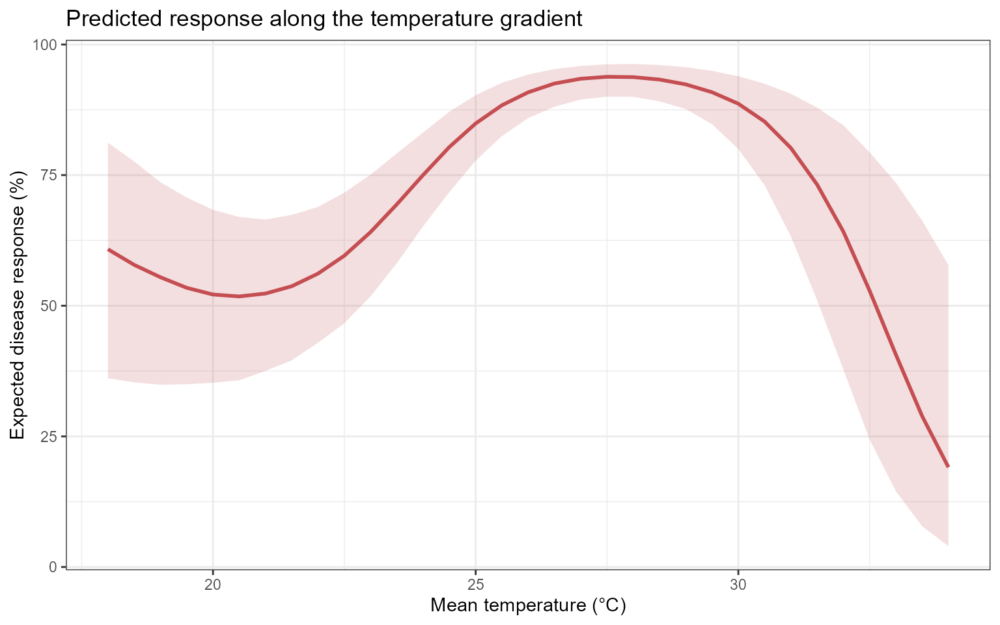
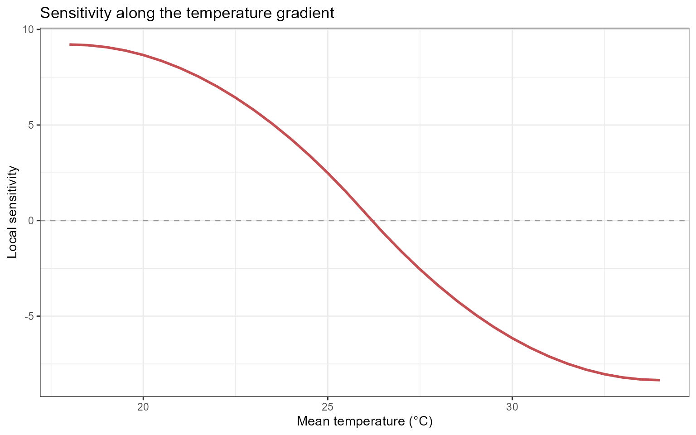
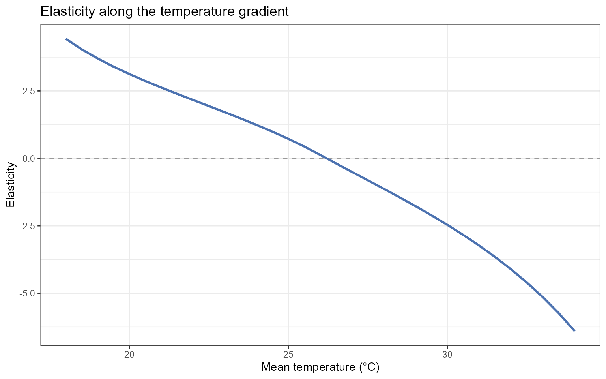
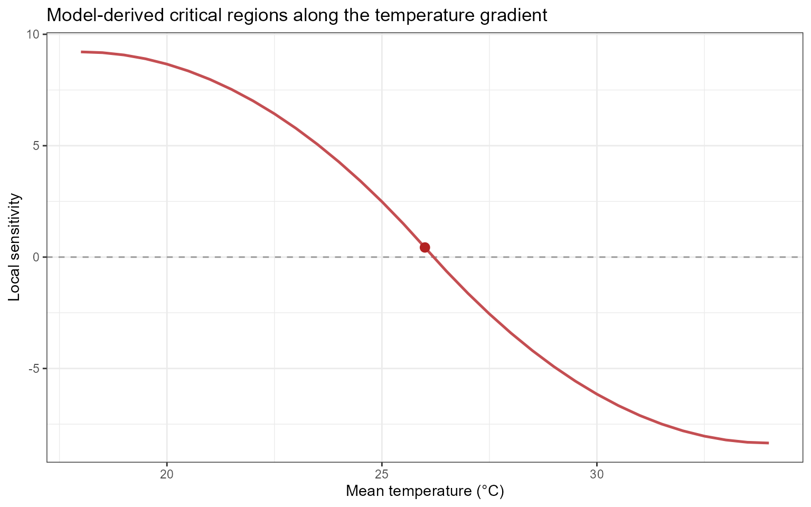
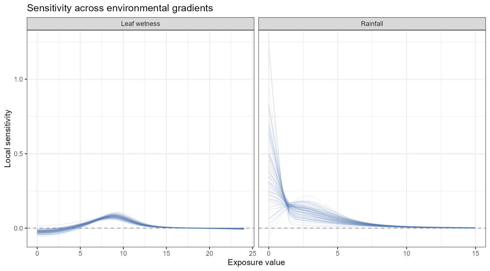
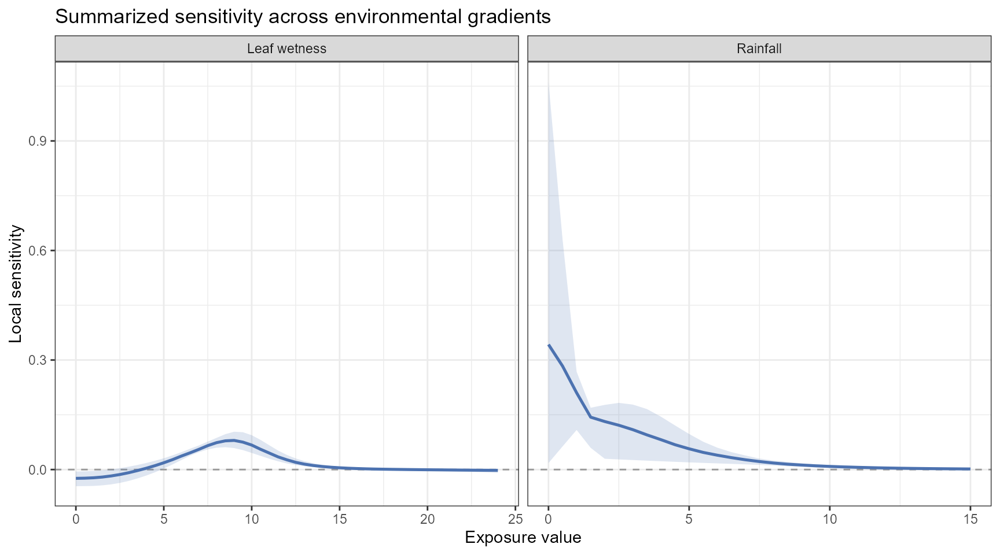

Sensitivity Analysis and Decision Support
Ricardo G. Tomáz
Source:vignettes/sensitivity-decision.Rmd
sensitivity-decision.RmdIntroduction
Exposure-response relationships are often non-linear. A small change in an environmental exposure may correspond to little change in the expected disease response in one region of the fitted curve but a much larger change in another.
Effect summaries describe the direction and magnitude of modeled associations. Sensitivity analysis addresses a complementary question:
Where does the model-predicted disease response change most rapidly as an exposure changes?
EpiExposure provides tools for examining:
- local rates of change along prediction curves;
- proportional response changes through elasticity;
- model-derived critical exposure regions;
- differences in sensitivity among environmental drivers;
- potential regions of interest for monitoring and decision support.
What you will learn. This tutorial shows how to generate controlled exposure gradients, predict disease responses along those gradients, calculate local sensitivity and elasticity, and identify regions in which the fitted response changes most rapidly.
Sensitivity results describe mathematical features of the fitted model. They do not automatically establish biological thresholds, causal intervention points, or management recommendations. Such interpretations require biological validation and decision criteria appropriate to the pathosystem.
Preparing the example model
This section uses the same example dataset and DLNM specification introduced in the previous tutorials.
data(
"epi_data")Define the exposure-lag structures:
cb <- define_exposures(
data = epi_data,
vars = c(
"tmean",
"rain",
"wetness"
),
max_lag = 85,
df_var = 3,
df_lag = 2
)Build the epidemic-level design:
dat <- build_design(
data = epi_data,
cb_templates = cb
)Prepare the disease response:
dat <- prepare_response(
data = dat,
response = "y",
family = "beta"
)Fit the DLNM:
fit <- fit_epidlnm(
data = dat,
model_engine = "glmmTMB",
family = "beta",
random_effect = NULL,
epiexposure_spec = attr(
cb,
"spec"
)
)The fitted model is now used to predict the expected disease response along controlled environmental gradients.
From effect interpretation to sensitivity analysis
The Understanding Effects section introduced lag-specific, period-specific, and cumulative summaries of the fitted exposure-lag-response relationship.
Sensitivity analysis provides a different view. Rather than summarizing the magnitude of an effect at an exposure-lag combination, it estimates how rapidly the predicted response changes along a selected exposure gradient.
Conceptually:
effect analysis
→ What modeled contrast is associated with an exposure?
sensitivity analysis
→ How rapidly does the predicted response change as the exposure changes?The two approaches are complementary. A region can have a relatively large predicted response but low sensitivity if the curve is locally flat. A region with a moderate predicted response can have high sensitivity if the curve is changing rapidly.
Generating controlled exposure gradients
The sensitivity workflow uses simulate_ranges() and
simulate_scenarios() to create controlled exposure
gradients.
In this section, these functions are used specifically to evaluate one environmental variable across a sequence of values while the remaining variables are held constant.
The broader use of simulation tools for constructing complete exposure histories, structured events, and multivariable scenarios is covered in the Simulation and Prediction section.
First, define epidemiological lag periods:
periods <- define_periods(
max_lag = 85,
cuts = c(
20,
40,
60
),
prefix = "Period"
)
periods
#> period lag_start lag_end
#> 1 Period1 0 20
#> 2 Period2 21 40
#> 3 Period3 41 60
#> 4 Period4 61 85These periods divide the retrospective lag interval into four sections.
Remember that lag order is retrospective:
smaller lag → closer to disease assessment
larger lag → earlier exposure conditionTemperature sensitivity
Generating a temperature gradient
The following scenario grid evaluates mean temperature from 18 to 34 °C while holding rainfall and leaf wetness constant:
temp_range <- simulate_ranges(
periods = periods,
vary = list(
rain = 5,
wetness = 10,
tmean = seq(
18,
34,
by = 0.5
)
),
scenario_type = "grid",
scenario_var = "tmean"
)This is a controlled model-based gradient. It does not represent additional observed data.
Predicting responses along the gradient
temp_predictions <- simulate_scenarios(
fit = fit,
scenarios = temp_range,
data = epi_data,
uncertainty = TRUE,
output = "summary",
n_samples = 1000,
seed = 123
)The predictions from the fitted Beta model are returned as proportions. For visualization, they are converted to percentages:
response_curve <- temp_predictions |>
dplyr::transmute(
value = tmean,
prediction = prediction * 100,
lower = prediction_lower * 100,
upper = prediction_upper * 100
) |>
dplyr::arrange(
value
)Inspect the response curve:
| value | prediction | lower | upper |
|---|---|---|---|
| 18.0 | 60.813 | 36.128 | 81.224 |
| 18.5 | 57.821 | 35.329 | 77.611 |
| 19.0 | 55.452 | 34.887 | 73.631 |
| 19.5 | 53.431 | 34.972 | 70.713 |
| 20.0 | 52.146 | 35.257 | 68.366 |
| 20.5 | 51.783 | 35.730 | 66.990 |
| 21.0 | 52.339 | 37.542 | 66.505 |
| 21.5 | 53.734 | 39.559 | 67.379 |
| 22.0 | 56.157 | 42.924 | 68.922 |
| 22.5 | 59.573 | 46.643 | 71.655 |
Visualizing the response curve
ggplot(
response_curve,
aes(
x = value,
y = prediction
)
) +
geom_ribbon(
aes(
ymin = lower,
ymax = upper
),
fill = "#C44E52",
alpha = 0.18
) +
geom_line(
linewidth = 1,
color = "#C44E52"
) +
theme_bw() +
labs(
x = "Mean temperature (°C)",
y = "Expected disease response (%)",
title = "Predicted response along the temperature gradient"
)
The line represents the central expected response under the fitted model. The ribbon represents uncertainty associated with the fitted model coefficients.
The curve should not be interpreted as a causal dose-response relationship unless the study design and assumptions support that interpretation.
Why sensitivity analysis?
Prediction curves show the expected response along an exposure gradient.
Sensitivity curves describe the local slope of those prediction curves.
For a response function , local sensitivity is conceptually related to:
where is the exposure value.
A large absolute sensitivity indicates that the predicted response is changing rapidly at that point of the fitted curve. A sensitivity near zero indicates a locally flat region.
Computing temperature sensitivity
temp_sensitivity <- epi_sensitivity(
data = response_curve,
x = "value",
y = "prediction",
scenario_var = NULL,
elasticity = TRUE,
critical = TRUE,
k = 3
)Inspect the resulting columns:
| value | prediction | lower | upper | sensitivity | sensitivity_curve_value | elasticity | critical | critical_type | critical_x |
|---|---|---|---|---|---|---|---|---|---|
| 18.0 | 60.8135 | 36.1283 | 81.2241 | 9.3898 | 37.3722 | 4.5225 | FALSE | NA | NA |
| 18.5 | 57.8212 | 35.3292 | 77.6107 | 9.3545 | 42.0612 | 4.1144 | FALSE | NA | NA |
| 19.0 | 55.4523 | 34.8875 | 73.6309 | 9.2486 | 46.7149 | 3.7616 | FALSE | NA | NA |
| 19.5 | 53.4312 | 34.9722 | 70.7135 | 9.0720 | 51.2980 | 3.4486 | FALSE | NA | NA |
| 20.0 | 52.1457 | 35.2574 | 68.3660 | 8.8248 | 55.7752 | 3.1644 | FALSE | NA | NA |
| 20.5 | 51.7833 | 35.7296 | 66.9899 | 8.5070 | 60.1111 | 2.9012 | FALSE | NA | NA |
| 21.0 | 52.3391 | 37.5424 | 66.5048 | 8.1186 | 64.2704 | 2.6527 | FALSE | NA | NA |
| 21.5 | 53.7342 | 39.5593 | 67.3794 | 7.6596 | 68.2179 | 2.4140 | FALSE | NA | NA |
| 22.0 | 56.1569 | 42.9242 | 68.9219 | 7.1299 | 71.9182 | 2.1811 | FALSE | NA | NA |
| 22.5 | 59.5731 | 46.6426 | 71.6553 | 6.5296 | 75.3360 | 1.9501 | FALSE | NA | NA |
Interpreting sensitivity
Positive sensitivity indicates that the expected disease response increases locally as the exposure increases.
Negative sensitivity indicates that the expected disease response decreases locally as the exposure increases.
Values near zero indicate a locally flat region of the model-predicted response curve.
Sensitivity describes the local slope of the prediction curve. It should not automatically be interpreted as disease risk or as a causal effect of changing the exposure.
Visualizing temperature sensitivity
ggplot(
temp_sensitivity,
aes(
x = value,
y = sensitivity
)
) +
geom_hline(
yintercept = 0,
color = "grey60",
linetype = "dashed"
) +
geom_line(
linewidth = 1,
color = "#C44E52"
) +
theme_bw() +
labs(
x = "Mean temperature (°C)",
y = "Local sensitivity",
title = "Sensitivity along the temperature gradient"
)
The sign describes the direction of local change, whereas the absolute magnitude describes how rapidly the prediction changes.
Elasticity analysis
What is elasticity?
Sensitivity measures the absolute local rate of change in the predicted response with respect to an exposure.
Elasticity expresses the local response change relative to the current exposure and response scales.
Conceptually, elasticity can be represented as:
It addresses the question:
What proportional change in the expected disease response is associated with a proportional change in the exposure at this point of the fitted curve?
Elasticity is dimensionless, which can facilitate comparisons across variables measured in different units.
However, elasticity may become unstable when the exposure or predicted response is close to zero. It should be interpreted cautiously in those regions.
Visualizing elasticity
ggplot(
temp_sensitivity,
aes(
x = value,
y = elasticity
)
) +
geom_hline(
yintercept = 0,
color = "grey60",
linetype = "dashed"
) +
geom_line(
linewidth = 1,
color = "#4C72B0"
) +
theme_bw() +
labs(
x = "Mean temperature (°C)",
y = "Elasticity",
title = "Elasticity along the temperature gradient"
)
Elasticity should be interpreted together with the underlying prediction and sensitivity curves. A large elasticity value can arise from a small denominator rather than from a large absolute response change.
Identifying critical regions
When:
critical = TRUEepi_sensitivity() identifies points or regions that
satisfy the function’s criterion for comparatively strong local response
change.
These locations are model-derived critical regions. They may suggest exposure ranges that deserve closer biological investigation, but they should not automatically be described as biological thresholds.
A biological or management threshold requires additional justification, such as:
- experimental validation;
- an established disease criterion;
- a decision-relevant loss boundary;
- demonstrated management value;
- acceptable classification or forecasting performance.
Extracting critical points
critical_temperature <- temp_sensitivity |>
dplyr::filter(
critical
)
critical_temperature
#> value prediction lower upper sensitivity sensitivity_curve_value
#> 1 26 90.84697 85.90512 94.25262 0.3501106 88.38482
#> elasticity critical critical_type critical_x
#> 1 0.1029914 TRUE local_maximum 26.15992Visualizing critical points
ggplot(
temp_sensitivity,
aes(
x = value,
y = sensitivity
)
) +
geom_hline(
yintercept = 0,
color = "grey60",
linetype = "dashed"
) +
geom_line(
linewidth = 0.9,
color = "#C44E52"
) +
geom_point(
data = critical_temperature,
color = "#B22222",
size = 2.8
) +
theme_bw() +
labs(
x = "Mean temperature (°C)",
y = "Local sensitivity",
title = "Model-derived critical regions along the temperature gradient"
)
The highlighted points indicate comparatively strong local changes
according to the criterion used by epi_sensitivity(). They
do not, by themselves, establish biologically validated thresholds.
Comparing environmental drivers
Sensitivity analyses can also be conducted for rainfall and leaf wetness.
The following examples evaluate one exposure at a time while holding the other environmental variables constant.
Rainfall sensitivity
Generating a rainfall gradient
rain_range <- simulate_ranges(
periods = periods,
vary = list(
tmean = 25,
wetness = 10,
rain = seq(
0,
15,
by = 0.5
)
),
scenario_type = "grid",
scenario_var = "rain"
)Predicting rainfall scenarios
Sample-level predictions are requested so that sensitivity can be evaluated across uncertainty realizations:
rain_predictions <- simulate_scenarios(
fit = fit,
scenarios = rain_range,
data = epi_data,
uncertainty = TRUE,
output = "samples",
n_samples = 1000,
seed = 123
)Computing rainfall sensitivity
sens_rain <- epi_sensitivity(
data = rain_predictions,
x = "rain",
y = "prediction",
scenario_var = "sample",
elasticity = TRUE,
critical = TRUE,
method = "finite",
k = 3
)Leaf wetness sensitivity
Generating a leaf wetness gradient
wetness_range <- simulate_ranges(
periods = periods,
vary = list(
tmean = 25,
rain = 5,
wetness = seq(
0,
24,
by = 0.5
)
),
scenario_type = "grid",
scenario_var = "wetness"
)Predicting leaf wetness scenarios
wetness_predictions <- simulate_scenarios(
fit = fit,
scenarios = wetness_range,
data = epi_data,
uncertainty = TRUE,
output = "samples",
n_samples = 1000,
seed = 456
)Computing leaf wetness sensitivity
sens_wetness <- epi_sensitivity(
data = wetness_predictions,
x = "wetness",
y = "prediction",
scenario_var = "sample",
elasticity = TRUE,
critical = TRUE,
method = "finite",
k = 3
)Combining sensitivity results
Rainfall and leaf wetness are measured on different scales. Therefore, they should not be placed on a shared exposure axis without preserving their original units.
Create a common exposure-value column and retain the variable identifier:
sens_rain_plot <- sens_rain |>
dplyr::mutate(
variable = "Rainfall",
exposure_value = rain
)
sens_wetness_plot <- sens_wetness |>
dplyr::mutate(
variable = "Leaf wetness",
exposure_value = wetness
)
combined_sensitivity <- dplyr::bind_rows(
sens_rain_plot,
sens_wetness_plot
)Visualizing uncertainty realizations
ggplot(
combined_sensitivity,
aes(
x = exposure_value,
y = sensitivity,
group = sample
)
) +
geom_hline(
yintercept = 0,
color = "grey60",
linetype = "dashed"
) +
geom_line(
alpha = 0.10,
linewidth = 0.35,
color = "#4C72B0"
) +
facet_wrap(
vars(
variable
),
scales = "free_x"
) +
theme_bw() +
labs(
x = "Exposure value",
y = "Local sensitivity",
title = "Sensitivity across environmental gradients"
)
Each line represents one uncertainty realization. The collection of lines shows how coefficient uncertainty propagates into the estimated sensitivity curves.
If the sample identifier returned by
simulate_scenarios() has a different column name,
replace:
group = samplewith the corresponding sample-identification column.
Summarizing sensitivity uncertainty
Sample-level sensitivity results can be summarized at each exposure value.
sensitivity_summary <- combined_sensitivity |>
dplyr::group_by(
variable,
exposure_value
) |>
dplyr::summarise(
sensitivity_median = stats::median(
sensitivity,
na.rm = TRUE
),
sensitivity_lower = stats::quantile(
sensitivity,
probs = 0.025,
na.rm = TRUE
),
sensitivity_upper = stats::quantile(
sensitivity,
probs = 0.975,
na.rm = TRUE
),
.groups = "drop"
)Inspect the summaries:
| variable | exposure_value | sensitivity_median | sensitivity_lower | sensitivity_upper |
|---|---|---|---|---|
| Leaf wetness | 0.0 | -0.0268 | -0.0468 | 0.0006 |
| Leaf wetness | 0.5 | -0.0262 | -0.0478 | 0.0013 |
| Leaf wetness | 1.0 | -0.0253 | -0.0484 | 0.0024 |
| Leaf wetness | 1.5 | -0.0235 | -0.0470 | 0.0041 |
| Leaf wetness | 2.0 | -0.0207 | -0.0447 | 0.0063 |
| Leaf wetness | 2.5 | -0.0168 | -0.0412 | 0.0093 |
| Leaf wetness | 3.0 | -0.0120 | -0.0361 | 0.0128 |
| Leaf wetness | 3.5 | -0.0061 | -0.0294 | 0.0170 |
| Leaf wetness | 4.0 | 0.0006 | -0.0218 | 0.0221 |
| Leaf wetness | 4.5 | 0.0081 | -0.0125 | 0.0284 |
Visualizing summarized sensitivity
ggplot(
sensitivity_summary,
aes(
x = exposure_value,
y = sensitivity_median
)
) +
geom_hline(
yintercept = 0,
color = "grey60",
linetype = "dashed"
) +
geom_ribbon(
aes(
ymin = sensitivity_lower,
ymax = sensitivity_upper
),
fill = "#4C72B0",
alpha = 0.18
) +
geom_line(
linewidth = 0.9,
color = "#4C72B0"
) +
facet_wrap(
vars(
variable
),
scales = "free_x"
) +
theme_bw() +
labs(
x = "Exposure value",
y = "Local sensitivity",
title = "Summarized sensitivity across environmental gradients"
)
The uncertainty interval describes uncertainty propagated from the fitted model into the sensitivity calculation. It does not include uncertainty in the scenario values or additional observation-level variability.
Comparing sensitivity across variables
Absolute sensitivity values depend on the units of both the exposure and the predicted response.
For example:
- temperature is measured in degrees Celsius;
- rainfall is measured in millimeters;
- leaf wetness is measured in its recorded unit.
Consequently, the numerical magnitudes of raw sensitivity should not be compared directly across variables without considering their units and scales.
Elasticity can facilitate proportional comparisons because it is dimensionless. However, elasticity can be unstable near zero exposure or zero predicted response.
A defensible comparison should therefore consider:
- sensitivity;
- elasticity;
- predicted disease level;
- uncertainty;
- observed exposure support;
- biological plausibility;
- the units and feasible range of each exposure.
Decision-support interpretation
Sensitivity analysis can help identify model-derived regions that merit closer attention, but it does not automatically define a management rule.
Potential applications include:
- identifying exposure ranges associated with rapid predicted response change;
- prioritizing environmental monitoring;
- identifying candidate regions for experimental validation;
- informing the construction of warning criteria;
- comparing sensitivity across environmental gradients;
- examining climate or management scenarios;
- supporting disease-forecasting research.
A decision-support interpretation should combine sensitivity with additional information, including:
- the absolute predicted disease response;
- uncertainty in the prediction and sensitivity;
- the frequency of the exposure condition;
- exposure values supported by the observed data;
- biological feasibility;
- intervention timing;
- management costs;
- potential yield or economic losses;
- consequences of false-positive and false-negative decisions.
High sensitivity is not automatically high disease. Sensitivity describes the local slope of the predicted response curve. A region can have high sensitivity but a moderate predicted response, or high predicted disease but low sensitivity if the response curve has reached a plateau.
Example interpretation
Suppose the temperature sensitivity analysis indicates:
- relatively small local changes below 20 °C;
- the largest positive sensitivity between 24 and 28 °C;
- decreasing sensitivity above 30 °C.
Under the fitted model, the expected disease response changes most rapidly along the 24–28 °C portion of the evaluated temperature gradient.
This region may deserve closer monitoring or biological investigation. However, high sensitivity alone does not establish a management threshold.
A management interpretation should also consider:
- the predicted disease level in that region;
- uncertainty around the sensitivity estimates;
- whether temperatures in that interval are common in the target system;
- whether the exposure can be modified;
- whether an intervention can be applied in time;
- the expected yield and economic consequences;
- the cost and effectiveness of the intervention.
Interpretation checklist
Before reporting sensitivity or elasticity results, verify:
- which response family and link were fitted;
- which environmental variable was varied;
- which variables were held constant;
- which lag periods were represented in the scenarios;
- whether the evaluated gradient is supported by the observed data;
- whether the disease response was analyzed as a proportion or percentage;
- whether uncertainty samples were propagated;
- how the sensitivity derivative was estimated;
- how critical regions were defined;
- whether the result is being interpreted as a modeled association or as a validated decision threshold.
Summary
This section demonstrated how EpiExposure can be used to
examine local changes along model-predicted response curves.
The sensitivity workflow consists of:
controlled exposure gradient
↓
predicted disease-response curve
↓
local sensitivity
↓
elasticity
↓
model-derived critical regionsThe principal tools are:
-
simulate_ranges()for creating controlled exposure gradients; -
simulate_scenarios()for predicting responses along those gradients; -
epi_sensitivity()for calculating sensitivity, elasticity, and critical regions.
Sensitivity analysis complements the effect summaries introduced in the Understanding Effects section
Lag-specific and period-specific effects describe the fitted exposure-lag association, whereas sensitivity describes how rapidly a predicted response changes along a selected environmental gradient.
Sensitivity and elasticity are model-derived quantities. Their use in decision support requires biological interpretation, uncertainty assessment, and decision criteria appropriate to the pathosystem.
Next steps
The next section, Simulation and Prediction, expands from controlled one-variable gradients to complete hypothetical exposure histories and multivariable scenarios.
It introduces:
-
simulate_exposures()for generating complete chronological profiles; -
simulate_ranges()for constructing candidate exposure combinations; -
simulate_scenarios()for predicting across scenario grids; -
predict_outcomes()for complete exposure histories; -
compare_exposures()for comparing environmental profiles; -
compare_predictions()for comparing their expected disease outcomes.
These tools allow researchers to investigate exposure timing, construct alternative environmental histories, propagate parameter uncertainty, and compare model-based disease predictions.